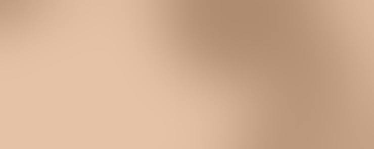
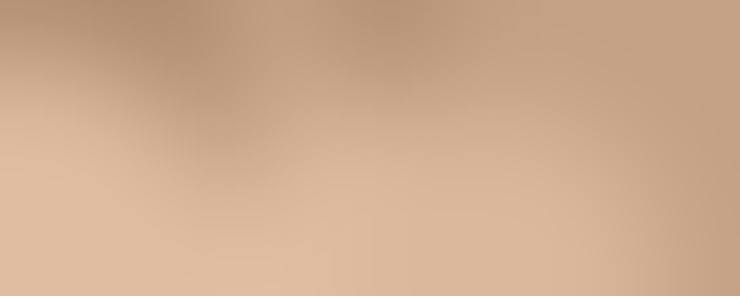
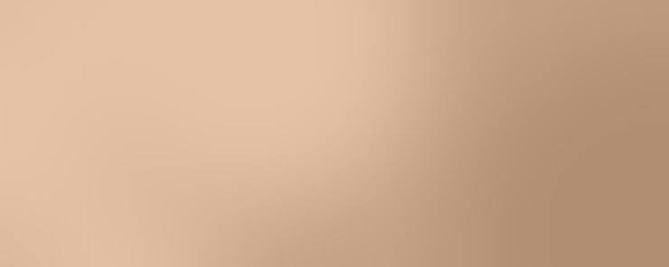
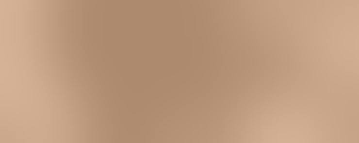
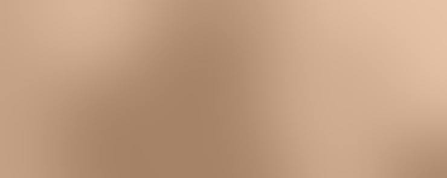

Cases & Reviews
여울의 눈성형은,
사람마다 다른 설계에서
시작됩니다.
같은 수술이라도 고민과 눈의 조건은
모두 다릅니다.
수술 전 고민에서 회복까지,
한 분 한 분의 기록을 담았습니다.
Patient Reviews
사례로 보는 여울의 기록
-
쌍꺼풀절개
라인 폭은 그대로, 두툼한 느낌만 정리한 경우
기존 쌍꺼풀 폭은 크게 줄이지 않으면서, 눈을 떴을 때 라인 아래로 두툼하게 접히던 부분을 정리해 라인이 눈과 자연스럽게 이어지도록 한 사례입니다.

-
쌍꺼풀절개트임
답답한 눈매를 또렷하게, 절개 쌍꺼풀과 밑트임
라인을 또렷하게 잡고 바깥 아래쪽을 조금 열어 눈매가 시원해 보이도록 계획한 사례입니다. 수술 한 달 뒤까지 붓기가 조금 남는 경과를 함께 담았습니다.

-
쌍꺼풀자연유착눈썹하거상
처진 윗눈꺼풀을 가볍게, 인상 변화는 적게
눈 위 피부가 겹쳐 무거워 보이던 부분을 덜어 내고, 라인은 과하게 드러나지 않도록 잡은 사례입니다. 쌍꺼풀이 크게 생기는 것을 원하지 않아 눈썹 아래에서 처진 피부를 정리하고, 낮은 자연유착 라인으로 다시 덮이지 않도록 받쳤습니다. 두 달 시점의 경과를 함께 담았습니다.

-
재수술
높았던 라인을 낮춰 편안한 눈매로
이전 수술의 높은 라인을 낮추고 유착을 정리해, 눈을 감았을 때의 모습까지 자연스럽게 맞춘 재수술 사례입니다.

-
눈밑지방재배치
불룩한 눈밑을 평평하게 이어 준 경우
튀어나온 지방을 꺼진 고랑 쪽으로 옮겨, 피곤해 보이던 그늘을 줄인 사례입니다.

-
트임재수술
다시 막힌 앞트임을 흔적 적게 조절
이전 트임이 다시 덮여 답답해 보이던 앞머리를, 흉터 조직을 고려해 필요한 만큼만 다시 연 사례입니다.

-
눈매교정쌍꺼풀
졸려 보이던 눈에 눈뜨는 힘을 더한 경우
라인만으로는 부족했던 또렷함을 눈매교정으로 보완한 사례입니다.
-
상안검수술
속눈썹을 덮던 피부를 덜어 시야를 넓힌 경우
처진 윗눈꺼풀 피부를 필요한 만큼 덜어 내 눈이 가벼워진 사례입니다.
-
하안검수술눈밑지방재배치
처진 아래 눈꺼풀까지 함께 정리한 경우
눈밑 지방을 옮기고 처진 피부도 함께 정리한 사례입니다.
-
쌍꺼풀자연유착
무쌍 눈에 낮고 자연스러운 라인
무쌍의 인상을 크게 바꾸지 않도록 낮은 라인을 잡은 사례입니다.
-
재수술눈매교정
다시 풀린 라인을 원인부터 고친 경우
라인이 반복해서 풀리던 원인을 찾아 눈뜨는 힘과 함께 교정한 재수술 사례입니다.
-
트임
짧은 가로 길이를 바깥쪽으로 보완한 경우
눈의 가로 길이가 짧아 보이던 부분을 뒤트임으로 조절한 사례입니다.
-
지방이식
꺼진 눈밑 그늘을 볼륨으로 채운 경우
꺼진 부위에 볼륨을 채워 어두워 보이던 그늘을 줄인 사례입니다.
-
쌍꺼풀재수술
좌우 높이가 달랐던 라인을 맞춘 경우
양쪽 라인 높이 차이를 원인부터 나눠 보고 균형을 맞춘 재수술 사례입니다.
-
눈썹하거상상안검수술
눈썹과 눈꺼풀 처짐을 함께 본 경우
처진 위치를 나눠 보고 눈썹하거상을 고른 사례입니다.